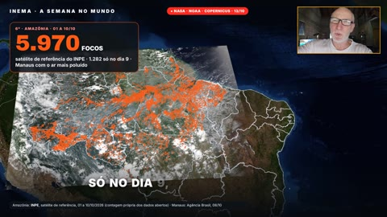
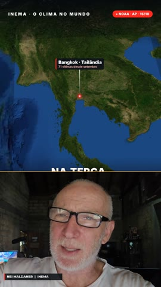
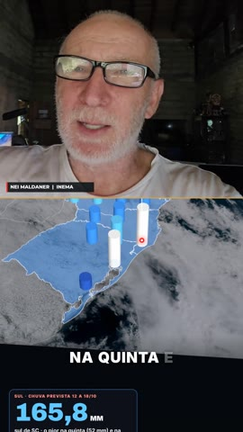
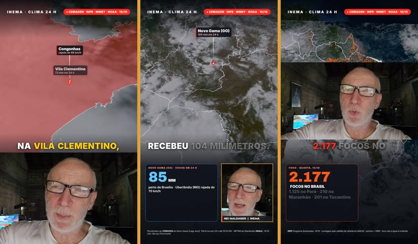
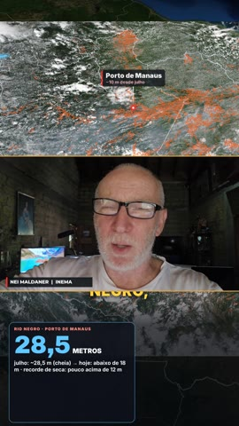
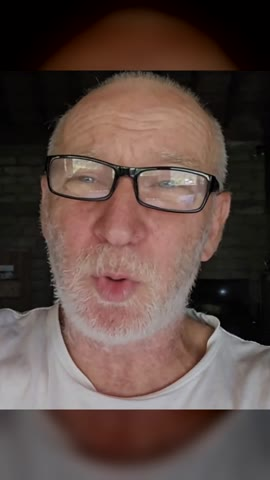

Where the avatar goes
Where the avatar appears in each layout
A real frame of each layout. For layouts that alternate, the image shows both moments: content on the left, avatar on the right.
| Image | Layout | Where the avatar appears | Size | When it appears |
|---|---|---|---|---|
| 16:9 | ||||
 | Largo · Widelargo | right-hand column, next to the content | 640×1080 (1/3 of the screen) | the whole video |
 | Canto · Cornercanto | amber frame in the bottom-right corner, over the content | 400×453 | the whole video |
 | Bolha · Bubblebolha | circle with an amber ring in the bottom-right corner | Ø 360 px | the whole video |
 | Telejornal · Newscasttelejornal | full screen, replacing the content | 1920×1080 | only in the chosen segments (default: 4 s at the start and 5 s at the end) |
 | Dividido · Splitdividido | right half of the screen | 960×1080 (1/2) | the whole video |
 | Apresentador · Presenterapresentador | full screen in the background, shifted right; content in a card on the left | 1920×1080 (card 1040×585) | the whole video |
 | Documentário · Documentarydocumentario | full screen, only at the close | 1920×1080 | only in the last seconds (default 6 s, --fim) |
 | Aula · Lessonaula | small amber frame in the TOP-right corner, over the content | 406×228 | the whole video |
| 9:16 | ||||
 | Faixa · Stripfaixa | horizontal strip at the bottom, below the content | 1080×608 | the whole video |
 | Canto · Cornercanto | amber frame at the bottom right, over the content | 400×453 | the whole video |
 | Bolha · Bubblebolha | circle with an amber ring at the bottom right | Ø 400 px | the whole video |
 | Telejornal · Newscasttelejornal | full screen (face centered over a blurred background) | 1080×1920 | only in the chosen segments (default: 4 s at the start and 5 s at the end) |
 | Apresentador · Presenterapresentador | bottom half, large; content in a square card on top | 1080×1215 (card 620×620) | the whole video |
 | Viralviral | full screen, alternating with the content (normal and close-up) | 1080×1920 | every 2 s (content → avatar → content → close-up); the whole last 5 s |
 | Documentário · Documentarydocumentario | full screen, only at the close | 1080×1920 | only in the last seconds (default 6 s, --fim) |
 | Metade · Halfmetade | bottom half of the screen, below the content | 1080×770 | the whole video |
 | Invertido · Invertedinvertido | top part of the screen, with the content below | 1080×880 | the whole video |
 | Pergunta · Questionpergunta | bottom strip on the hook → corner frame → large in the middle on the question | 1080×720 → 400×453 → 1080×608 | the whole video, changing place (hook: --gancho; question: --trechos) |
 | Empilhado · Stackedempilhado | middle band, between two content blocks | 1080×608 | the whole video |
 | Personagem · Characterpersonagem | full screen, no separate content | 1080×1920 | the whole video |